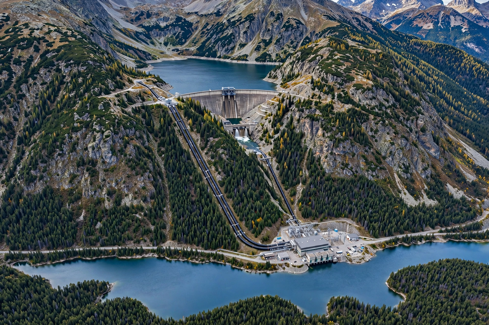

Pumped-storage hydroelectricity

Pumped-storage hydroelectricity is a method of storing energy in the form of water held in an elevated reservoir. When electricity is plentiful and cheap, water is pumped uphill; when demand peaks, the water is released through turbines to generate power, like a giant rechargeable battery for the grid. See Hydroelectricity.
Pumped storage is by far the world's largest form of grid energy storage, accounting for the great majority of stored electricity capacity, even as batteries grow rapidly.
How it works
A pumped-storage plant has two reservoirs at different heights connected by tunnels, a powerhouse with reversible pump-turbines, and a grid connection. Round-trip efficiency is typically 70–85 per cent — the losses are the price of shifting energy from low-value hours to high-value ones and of providing rapid-response power and grid stability services.
Most large stations were built in the 1960s–1980s to pair with nuclear and coal plants. Interest has revived with variable {L('Wind_power')} and {L('Solar_power')}, whose output needs balancing over hours to days.
Notable plants
The Bath County station in Virginia, USA (about 3,000 MW) was long the world's largest; China's Fengning plant (3,600 MW) surpassed it. Other major schemes include Dinorwig in Wales, nicknamed 'Electric Mountain', which can deliver full power in seconds, and pumped-storage systems integrated with alpine reservoirs across Europe and Japan.
Because suitable sites need both elevation difference and water, proposals increasingly consider seawater, abandoned mines and paired off-river reservoirs.
See also: Hydroelectricity · Renewable energy · Hydroelectricity · Electricity · Energy storage